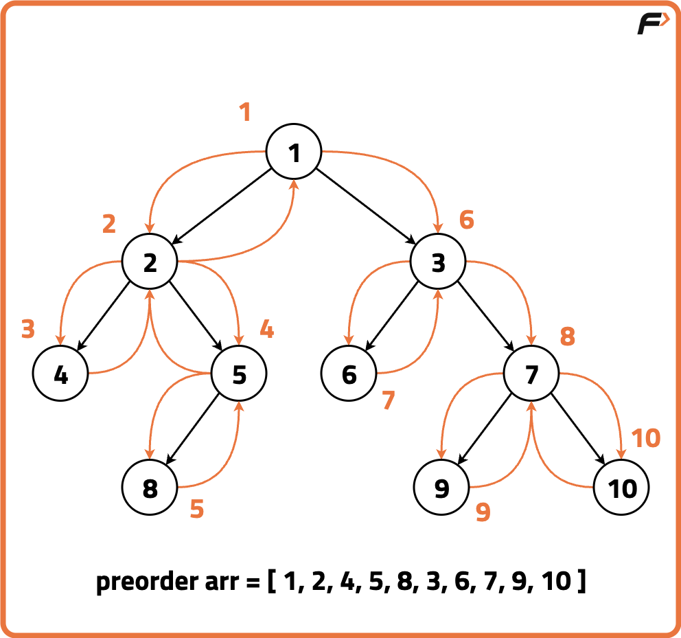
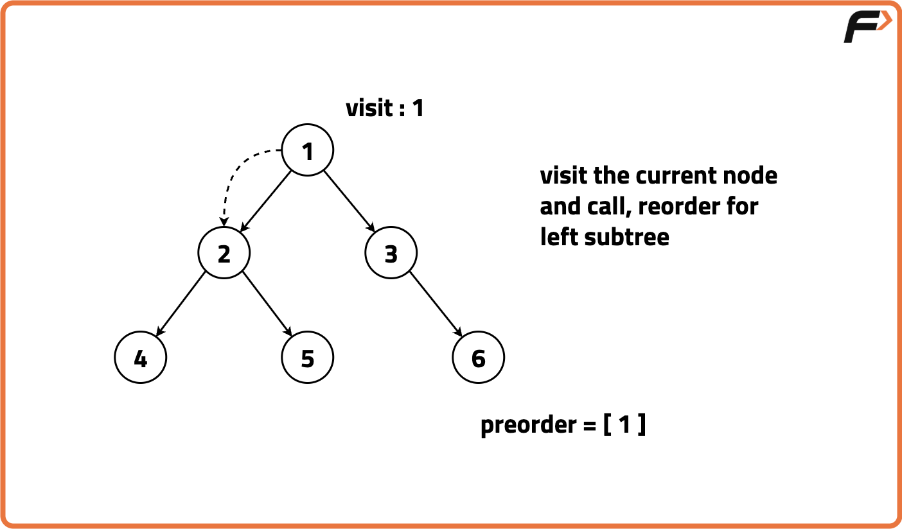
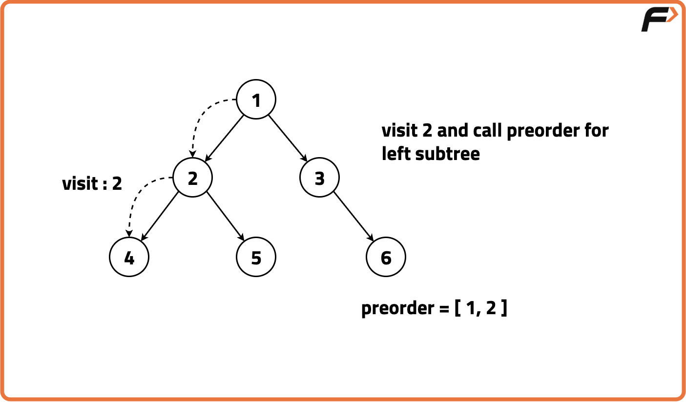
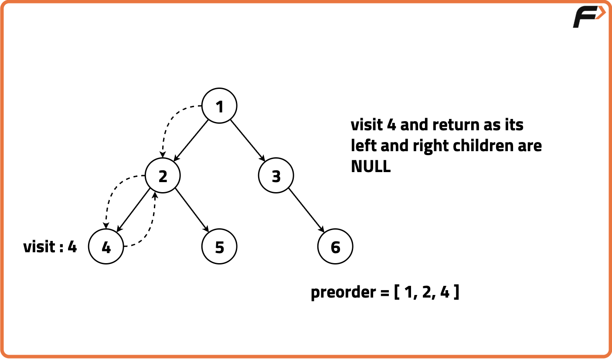
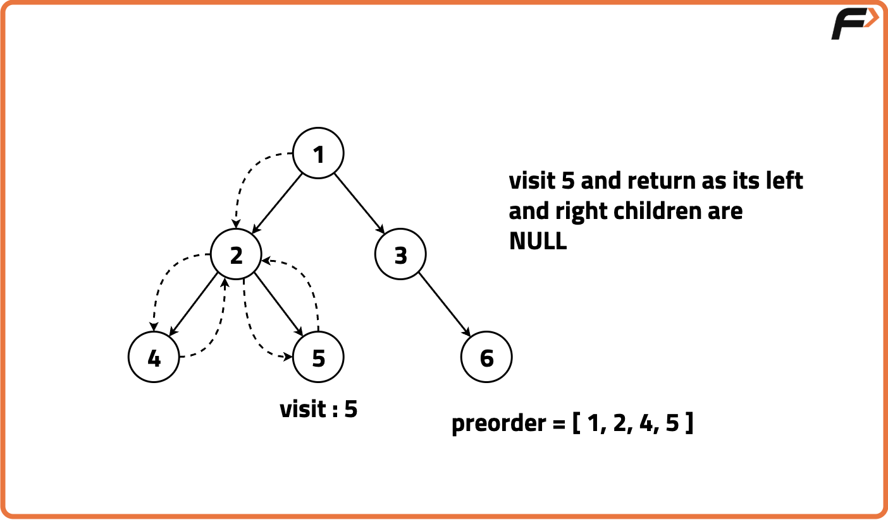
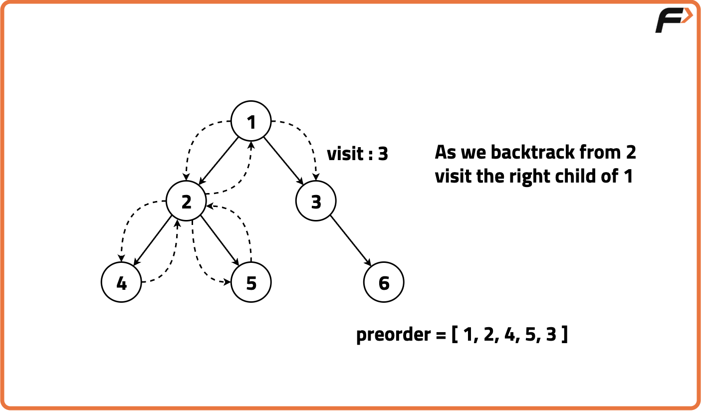
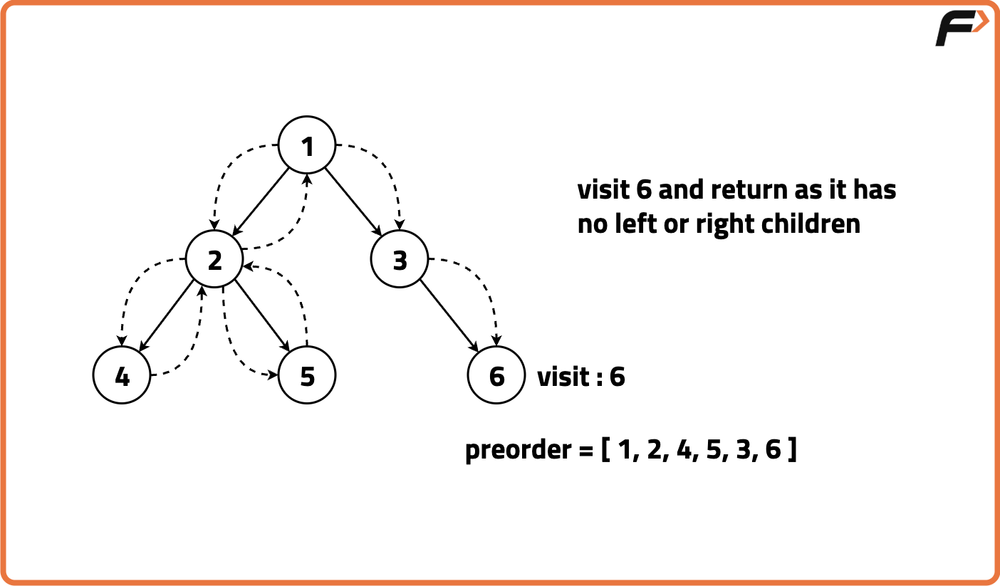

Archived from https://takeuforward.org/data-structure/preorder-traversal-of-binary-tree/
Problem Statement: Given the root of a Binary Tree, return the preorder, inorder and postorder traversal sequence of the given tree by making just one traversal.
Output: Preorder: [4, 2, 3, 9, 1, 5, 7, 6, 8] Explanation: We traverse the binary tree in the order of Root, Left then Right recursively resulting in the following traversal:
Output: Preorder: [1, 2, 4, 5, 8, 3, 6, 7, 9, 10] Explanation: We traverse the binary tree in the order of Root, Left then Right recursively resulting in the following traversal:

Disclaimer:
Here is the practice link to help you assess your knowledge better.
It's highly recommend trying to
solve it before looking at the solution.
Approach
Algorithm
Preorder traversal is one of the depth-first traversal methods used to explore nodes in a binary tree. The algorithm first visits the root node then in the preorder traversal, we visit (ie. add to the array) the current node by accessing its value then we recursively traverse the left subtree in the same manner. We repeat these steps for the left subtree then when we return to the current node, we recursively travel to the right subtree in a preorder manner as well.The sequence of steps in preorder traversal follows: Root, Left, Right.
Visit the current node and store its value (process the root first).
Recursively traverse the left subtree by invoking the preorder function on the left child of the current node.
After traversing the entire left subtree,we traverse the right subtree recursively. We once again invoke the preorder function, but this time on the right child of the current node.






Code
#include <bits/stdc++.h>
using namespace std;
// Node structure for
// the binary tree
struct Node {
int data;
Node* left;
Node* right;
// Constructor to initialize
// the node with a value
Node(int val) : data(val), left(nullptr), right(nullptr) {}
};
// Solution class containing traversal functions
class Solution {
public:
// Function to perform preorder traversal
// of the tree and store values in 'arr'
void preorder(Node* root, vector<int> &arr){
// If the current node is NULL
// (base case for recursion), return
if(root == nullptr){
return;
}
// Push the current node's
// value into the vector
arr.push_back(root->data);
// Recursively traverse
// the left subtree
preorder(root->left, arr);
// Recursively traverse
// the right subtree
preorder(root->right, arr);
}
// Function to initiate preorder traversal
// and return the resulting vector
vector<int> preOrder(Node* root){
// Create an empty vector to
// store preorder traversal values
vector<int> arr;
// Call the preorder traversal function
preorder(root, arr);
// Return the resulting vector
// containing preorder traversal values
return arr;
}
};
// Main function
int main()
{
// Creating a sample binary tree
Node* root = new Node(1);
root->left = new Node(2);
root->right = new Node(3);
root->left->left = new Node(4);
root->left->right = new Node(5);
// Create object of Solution class
Solution sol;
// Getting preorder traversal
vector<int> result = sol.preOrder(root);
// Displaying the preorder traversal result
cout << "Preorder Traversal: ";
// Output each value in the
// preorder traversal result
for(int val : result) {
cout << val << " ";
}
cout << endl;
return 0;
}
// Node structure for
// the binary tree
class Node {
int data;
Node left;
Node right;
// Constructor to initialize
// the node with a value
Node(int val) {
data = val;
left = null;
right = null;
}
}
// Solution class to perform preorder traversal
class Solution {
// Function to perform preorder traversal
// of the tree and store values in 'arr'
public void preorder(Node root, java.util.List<Integer> arr) {
// If the current node is NULL
// (base case for recursion), return
if (root == null) {
return;
}
// Push the current node's
// value into the vector
arr.add(root.data);
// Recursively traverse
// the left subtree
preorder(root.left, arr);
// Recursively traverse
// the right subtree
preorder(root.right, arr);
}
// Function to initiate preorder traversal
// and return the resulting list
public java.util.List<Integer> preOrder(Node root) {
// Create an empty list to
// store preorder traversal values
java.util.List<Integer> arr = new java.util.ArrayList<>();
// Call the preorder traversal function
preorder(root, arr);
// Return the resulting list
// containing preorder traversal values
return arr;
}
}
// Main class
public class Main {
public static void main(String[] args) {
// Creating a sample binary tree
Node root = new Node(1);
root.left = new Node(2);
root.right = new Node(3);
root.left.left = new Node(4);
root.left.right = new Node(5);
// Getting preorder traversal
Solution sol = new Solution();
java.util.List<Integer> result = sol.preOrder(root);
// Displaying the preorder traversal result
System.out.print("Preorder Traversal: ");
// Output each value in the
// preorder traversal result
for (int val : result) {
System.out.print(val + " ");
}
System.out.println();
}
}
# Node structure for
# the binary tree
class Node:
# Constructor to initialize
# the node with a value
def __init__(self, val):
self.data = val
self.left = None
self.right = None
# Solution class to perform preorder traversal
class Solution:
# Function to perform preorder traversal
# of the tree and store values in 'arr'
def preorder(self, root, arr):
# If the current node is NULL
# (base case for recursion), return
if root is None:
return
# Push the current node's
# value into the vector
arr.append(root.data)
# Recursively traverse
# the left subtree
self.preorder(root.left, arr)
# Recursively traverse
# the right subtree
self.preorder(root.right, arr)
# Function to initiate preorder traversal
# and return the resulting list
def preOrder(self, root):
# Create an empty list to
# store preorder traversal values
arr = []
# Call the preorder traversal function
self.preorder(root, arr)
# Return the resulting list
# containing preorder traversal values
return arr
# Main function
if __name__ == "__main__":
# Creating a sample binary tree
root = Node(1)
root.left = Node(2)
root.right = Node(3)
root.left.left = Node(4)
root.left.right = Node(5)
# Getting preorder traversal
sol = Solution()
result = sol.preOrder(root)
# Displaying the preorder traversal result
print("Preorder Traversal: ", end="")
# Output each value in the
# preorder traversal result
for val in result:
print(val, end=" ")
print()
// Node structure for
// the binary tree
class Node {
// Constructor to initialize
// the node with a value
constructor(val) {
this.data = val;
this.left = null;
this.right = null;
}
}
// Solution class to perform preorder traversal
class Solution {
// Function to perform preorder traversal
// of the tree and store values in 'arr'
preorder(root, arr) {
// If the current node is NULL
// (base case for recursion), return
if (root === null) {
return;
}
// Push the current node's
// value into the vector
arr.push(root.data);
// Recursively traverse
// the left subtree
this.preorder(root.left, arr);
// Recursively traverse
// the right subtree
this.preorder(root.right, arr);
}
// Function to initiate preorder traversal
// and return the resulting array
preOrder(root) {
// Create an empty array to
// store preorder traversal values
const arr = [];
// Call the preorder traversal function
this.preorder(root, arr);
// Return the resulting array
// containing preorder traversal values
return arr;
}
}
// Main function
function main() {
// Creating a sample binary tree
const root = new Node(1);
root.left = new Node(2);
root.right = new Node(3);
root.left.left = new Node(4);
root.left.right = new Node(5);
// Getting preorder traversal
const sol = new Solution();
const result = sol.preOrder(root);
// Displaying the preorder traversal result
process.stdout.write("Preorder Traversal: ");
// Output each value in the
// preorder traversal result
for (const val of result) {
process.stdout.write(val + " ");
}
console.log();
}
main();
Complexity Analysis.
Time Complexity: O(N), we process each node once for traversal. Space Complexity: O(N), extra space used for storing preorder traversal and recursive stack.